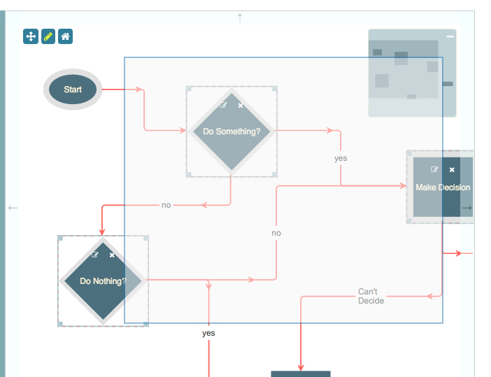
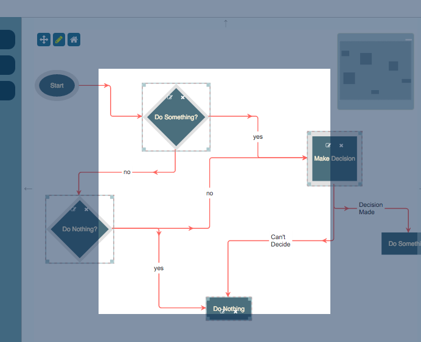

A Selection is a collection of Nodes, Ports and Edges (zero or more of each), upon which operations can be made that affect the entire set at once. A Selection is an instance of the class jsPlumbToolkitUtil.Selection.
You can work with these in one of two ways - either use the current selection associated with an instance of the Toolkit, or create an ad-hoc instance.
Each instance of the Toolkit maintains a current selection, exposing several methods for you to work with it. Changes to the current Selection are propagated to all Surfaces registered on some instance of the Toolkit.
The principal methods for working with the current selection are:
Set the current selection. Here, obj can take a number of forms:
Add something to the current selection. Here, obj can take a number of forms:
A helper method to get a Path (see here) and add it to the current selection.
Remove something from the current selection. Valid values for obj are the same as for the addToSelection and setSelection methods.
Get the current selection. This returns a Selection, which is a selector-like object that offers a number of methods for performing operations on the selection as a whole.
toolkit.clearSelection()function(index, object).Clears the current selection. This method is analogous to calling getCurrentSelection().clear().
If you are working with hierarchical data, you can use the Toolkit to get a list of descendants of some Node (and, optionally, the Edges to and from each Node):
var descendants = toolkit.selectDescendants(someNode);
The return value is a Selection, with all of the methods discussed above available. By default this Selection does not include the focus node or any Edges, but the method signature is as follows:
selectDescendants(node, [includeRoot=false], [includeEdges=false])
So this call would return all of a Node's descendants plus the Node itself:
var descendants = toolkit.selectDescendants(someNode, true);
And this would get the descendants, the Node itself, and any Edges connecting the Nodes in the set:
var descendants = toolkit.selectDescendants(someNode, true, true);
In addition to the current selection, you can also select a set of Nodes and/or Edges on an adhoc basis:
Here, obj can be some Node/Port/Edge, or the ID of some Node or Port, or an array of a combination of these.
A more powerful method to use to get a set of objects is filter, which, as the name suggests, can filter the contents
of some Toolkit instance according to a few criteria. There are two ways to call this method.
You can pass a Function as argument to the filter method, which is expected to return true to indicate that a
given object should be included:
var selection = toolkit.filter(function(obj) {
return (obj.objectType === "Node");
});
Note here that this function is given every object managed by the Toolkit instance - meaning all Nodes and Edges. So
you can use objectType to test if the object is a Node or an Edge. In this simple example we have simply returned all
the Nodes in the Toolkit instance.
Another example of using a function:
var selection = toolkit.filter(function(obj) {
return obj.objType === "Node" && obj.data.maxValue < 150;
});
Here we return only Nodes whose maxValue is less than 150.
Alternatively, you can pass a match object in to the filter method:
var selection = toolkit.filter({
maxValue:150
});
Here we've told the Toolkit we are interested only in Nodes whose maxValue is exactly 150. Note that with a match
object only exact matches are supported: we cannot recreate the previous example in which Nodes whose maxValue was
less than 150 are returned.
You can match an arbitrary number of values:
var selection = toolkit.filter({
maxValue:150,
lorem:"ipsum"
});
Here we get Nodes with a maxValue of 150 and a lorem of "ipsum".
You can instruct the Toolkit that an object that matches at least one entry in the match object should be included in the output (by default, every value must match):
var selection = toolkit.filter({
maxValue:150,
lorem:"ipsum"
}, true);
...by passing in true as the second argument to the filter function. So in this example we now get Nodes that have
a maxValue of 150 and/or a lorem of "ipsum".
The Surface operates in one of two modes:
The default mode, in which the mouse is used to pan the UI and support click events etc.
In this mode, the mouse is used to select objects in the UI using click and drag ("lasso" selection). Holding down the Shift key while selecting causes new objects to be added to the current selection. Otherwise, each new click and drag operation causes the current selection to be replaced.
Lasso selection works in the same way as AutoCAD: selecting from left to right will add nodes that intersect, in any amount, with the current selected area. Selecting from right to left will add only nodes that are completely enclosed by the current selected area.
By default, the lasso draws an element on screen that indicates the selected area:

You can also run the lasso in 'inverted' mode:

To do this, you must set a flag on the render call:
toolkitInstance.render({
...
lassoInvert:true
...
});
You can provide a list of classes that indicate elements upon which a mousedown should not launch the lasso:
toolkitInstance.render({
...
lassoFilter: ".controls, .controls *, .miniview, .miniview *",
...
});
This example is from the Hierarchical layout demo that ships with the Toolkit.
In 'normal' mode, the element drawn on screen is given a class of jtk-lasso. In 'inverted' mode, the elements drawn
on screen (there are 4 - top, bottom, left and right) are given a class of jtk-lasso-mask.
This is a fairly common use case when working with a Selection:
var selection = toolkit.selectDescendants(someNode);
toolkit.remove(selection);
Here we used the selectDescendants method, but we could have used any method that returns a Selection or Path - select, selectDescendants, filter or getPath.
You can append Selections to each other:
var selection1 = toolkitInstance.select(["1", "2", "3"]);
// we have a selection containing nodes 1, 2 and 3
var selection2 = toolkitInstance.getPath({source:"1", target:"17"});
// we have a selection containing the path from node 1 to node 17
selection1.append(selection2);
This is perhaps a spurious example. But you get the idea.
You can limit the number of Nodes and/or Edges in a Selection or Toolkit instance's currentSelection. This can be useful in a few ways: maybe your app wants to enforce that only one Node is selected at any point in time, for instance. Or maybe you want to maintain a selection queue of fixed size for some purpose.
You can provide constructor parameters to control this behaviour:
var tk = jsPlumbToolkit.newInstance({
maxSelectedNodes:1,
maxSelectedEdges:1,
selectionCapacityPolicy:jsPlumbToolkitUtil.Selection.DISCARD_NEW
});
Here we have specified that at most 1 Node and 1 Edge may be selected, and that when the user tries to add a new Node or Edge to the current selection, it should be discarded. The other option - the default option - for selectionCapacityPolicy is Selection.DISCARD_EXISTING, which takes the 0th element from the underlying list.
You can also control these values with setter methods:
tk.setMaxSelectedNodes(4);
tk.setMaxSelectedEdges(3);
tk.setSelectionCapacityPolicy(jsPlumbToolkitUtil.Selection.DISCARD_EXISTING);
To set limits and control the capacity policy of an ad-hoc selection, these methods are available:
var sel = tk.select(); // create an empty selection
sel.setMaxNodes(4);
sel.setMaxEdges(3);
sel.setCapacityPolicy(jsPlumbToolkitUtil.Selection.DISCARD_EXISTING);
Once you have a Selection, you can instruct a Surface to hide/show the entire Selection at once:
var sel = tk.select(["node1", "node2"]);
surface.setVisible(sel, false);
Here we assume the existence of a Toolkit called tk and a Surface called surface. Hiding/showing elements
is covered in more detail on the rendering page.